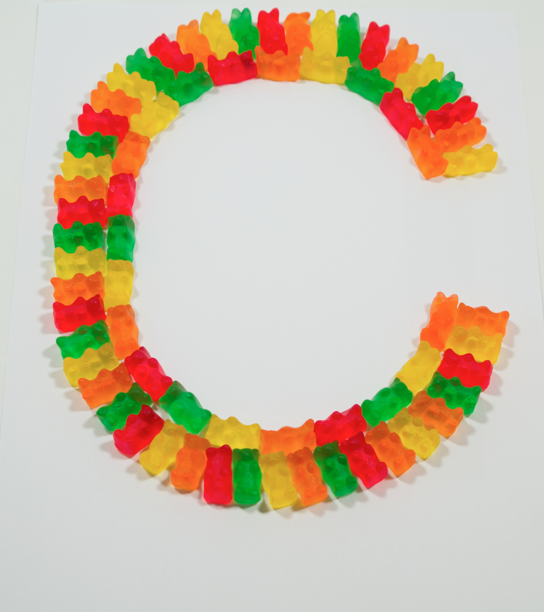
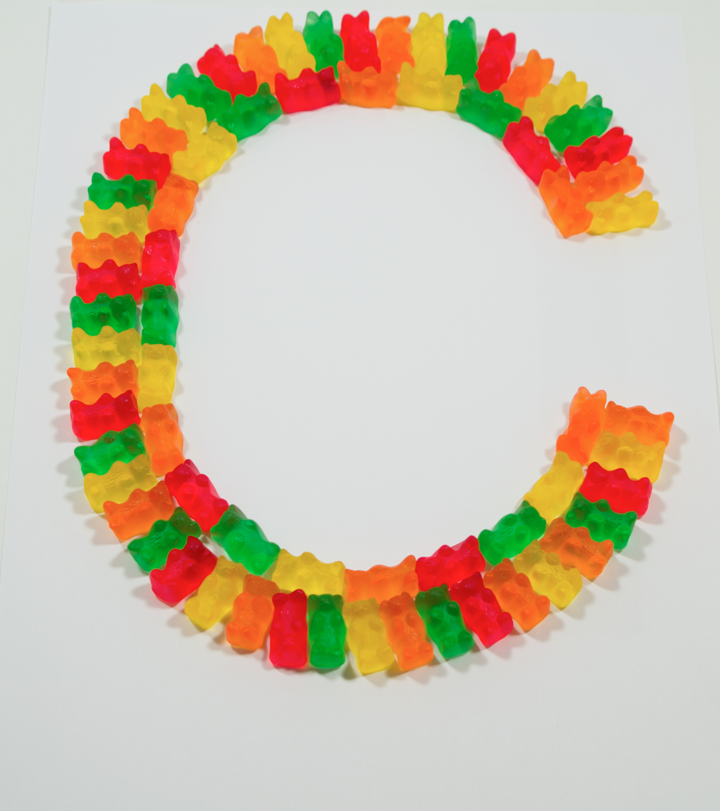
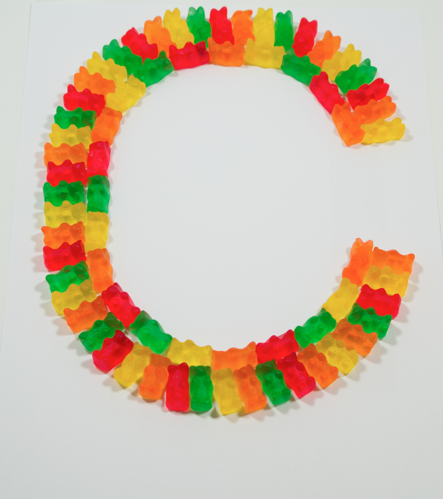
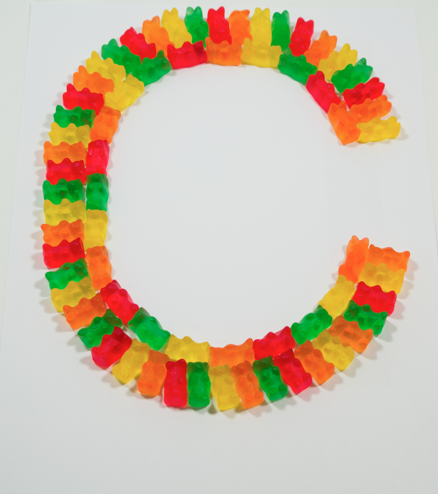

 

Full Alphabet I made using gummy bears in the font Helvetica
The Letter 'C' in my gummy alphabet.
Logo that I made for my VCD 3 class. This logo was for our RE*IMAGINE Medical Lake campaign.
A mock magazine spread I made for a company I created called Aloha Brewing which features a pineapple hard cider.
Final Poster for Typography that we made for the EWU Electrical Engineering student's senior capstone project.
One of the recycling poster I made in VCD 3 for Spokane and Cheney's informational recyling campaign.
One of the recycling poster I made in VCD 3 for Spokane and Cheneys informational recyling campaign.
One of the recycling poster I made in VCD 3 for Spokane and Cheneys informational recyling campaign.
A business card I made for my Production Design project and my madeup company called Twist Skin Care.